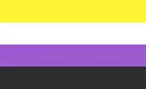
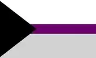

About me and this website!
7-minute read
Table of contents
Bio
"Mx." (pronounced as "mix") is a gender-neutral honorific, i.e. alternative for Ms./Mr. Poesu is short for "the poet of the sun". I came up with this pseudonym because I used to write poetry.
But you can call me El, Merlyn, or Merle (they/he), I'm a 20-something artist, anarchist, and atheist.
There're so many things I'm interested in that occasionally I feel torn apart between all of them. Doesn't help that I'm such an autie snail, you know? I don't have the spoons to draw more frequently.
I'm trans , nonbinary , polyamorous, and demisexual . All my creative works are inherently queer. The fact that I'm disabled and neurodivergent also plays a huge factor in my life and art. My disabilities include autism and anxiety disorder.
My biggest passion is drawing. I like all kinds of mediums, and if I could, I'd practise them all: Watercolour, ink, pastels, oil, gouache. Each is fascinating in their own way, especially in their unique textures. I love touching artworks, and to be frank I sneak to touch pieces in museums when nobody's looking. I've also begun finger sketching on my phone recently, there's something satisfying about gliding across a cold display, too.
Art aside, my ways to relax are either cycling or sitting on the riverbank for hours, dipping my feet in the water. Nature is easy to connect to and communicate with. And riding a bicycle feels liberating—I could go anywhere I want, escape from everything I did not want. These are my two my safe spaces.
My introduction to the IndieWeb
I guess I could call HTML my special interest as well, it just sucks me in and I can't help it. Probably its magic is what it also gives you freedom to do whatever you want, construct your home brick by brick. It's a creative process.
The little problem is (or was) that I love to get creative, but I'm not fond of socializing much.
So here comes your generic IndieWeb/SmallWeb newbie part. For a long time I've sticked to social media to no avail. It always was a chase after followers and likes, and these numbers pushed any meaningful ideas out. I never liked to promote myself.
My first introduction to the IndieWeb were autism-related blogs in 2021. At the time I didn't discover I'm autistic yet, but the more I read from autistic people, the more I recognized myself in those stories. I loved how nuanced and personal the blogs were. It's as if the space you write for shapes the way you talk about your experience. Social media posts are the same shallow things regurgitated over and over again, but every personal website you stumble across is novel. Blogs provide an opportunity to dive deep into something and learn new stuff.
I got inspired by all those enthusiastic folks doing what they love. It finally occured to me that showing off my art doesn't have to bring about misery, and in fact my way of doing it with pleasure is by building my own website.
The philosophy of this website
The website is currently static and kinda "handmade"—I'm manually building it from scratch with HTML and CSS. It's fun to learn new stuff.
"Why learn a whole new thing just to put your artworks out there? You could've just used any website builder," you may ask. But all those "no-code" solutions are kind of garbage, if you ask me. Many of them are adding unnecessary code, heavy libraries, and tracking. I think, it's nearly impossible to respect your users' privacy and disabilities while utilising such tools. Sure, I'm mostly just displaying some pictures, but the culture of care starts with us, simple folks, like you and me.
There are rules I want to set for this space. Kick me in the butt if any of these are ever violated:
- No bullshit such as tracking, analytics, ads, pop-ups, deceptive design, paywalls, loginwalls, third-party cookies, etc.
- JavaScript is purely optional and does not affect essential (i.e. accessibility) features.
- No likes, reactions, and views. These make me way too self-aware of the things I publish.
- No self-censorship. I put whatever I want here.
- Performance and accessibility are top priorities.
- Don't strive to look "professional," whatever that means.
- My code is human-readable, so anyone can inspect a page and easily understand how it works.
Ultimately it's important not how the website is done, but that it allows me to share my artwork. It may be poorly coded by the industry standarts, but it's what I'm doing with my own hands, and I value that.
I don't like relying on Microsoft's Github, but FOSS alternatives like SourceHut and Codeberg aren't better places for NSFW art. There're Vercel and Neocities, which are friendly to NSFW, but I'd rather move to self-hosting as soon as I can.
Generally I post my art here first and sometimes maybe some long ass posts. I go back to old posts and update them if needed, it's a permanent work in progress (looking at you, digital gardens).
Art manifesto
These are my values I stick to in my creative works. In a no way, shape, or form it's a dogma that everyone must adhere to, but I rely on them when producing new ideas and considering a collab. It's just for my own self. If you like this manifesto, you are free to use it and link it on your website!
-
Creation is a result of conscious observation. A great artist is a great viewer. A great viewer has the ability to analyze, intertwine, and expand upon what they see.
They not only see, but utilize other senses to understand the subject comprehensively. For me it's a lot about tactility: the texture of paint, paper, layers; the feeling of stroking a line with a brush. You feel how paint interacts with paper and you know it well, which facilitates control over the interaction. If it's a digital drawing, it's the feeling of the smooth surface you draw on.
Artists don't just see a still image, but interactions and relationships between objects, how they form a system that makes a composition.
It also means that no machine is able to (re)create art.
-
Art is an exploration of life, sensations, and relationships.
-
No kind of art is right or wrong. The artist is not limited to a certain, "more valid" goal, theme, medium, or style—there's no such thing. Art can be uncanny and whimsical, or mundane and hyperrealistic. It's free to express all facets of consciousness and life.
-
All art is art, no matter the purpose or lack of thereof. Do not define art by moral value or "usefulness."
If we are to define art by its moral value, we need a solid definition of moral value, but it's subjective and ever-changing. The byproduct of that logic is including morally reprehensible works under the umbrella of art. And I believe that's important: When you've separated yourself from The Bad Guys that their image is so far removed from that of your own, it may prevent you from analyzing their possible covert influence on your art and the bias you've got in general (you can't possibly be one of "those," right?).
If we are to define art by its "usefullness" or "meaningfullness," we fall pray to the exploitative nature of capitalism where everything must be used in some way. It's degrading.
I refuse to define art to prevent constructing a hierarchy. We are not "better people" because we make art, "good" and "real" art at that.
-
Everyone should be gently encouraged to get involved in a creative process.
-
No one must ever be shunned and barred from entry to the art sphere. Disability, poverty, or lack of skill are all aspects of sentience and thus of art.
-
The greatest value of art is the process of creating it. The result encapsulates an established relationship between the subject and the artist, ups and downs of this relationship, and efforts poured into it.
-
Art must be redefined not as a commodity or worse—a luxury,—but as a common good. It is best to share art freely for everyone to experience, whenever possible.
-
Art is inseparable from the artist for the artist projects their views, feelings, and experiences onto their craft in explicit or—more often—implicit ways.
To sum up: explore, reflect, share, and appreciate.
Contacts
Please feel free to reach out by Mastodon or email (you can request my Signal or Matrix contact info there as well). I'm open to feedback or maybe you just wanna chit-chat, I'm here for ya! As for technical stuff, you can also make suggestions on improvements to my website's code, I'm no web developer after all. And I love to collaborate and work in a team, so I'm eager to hear about your creative projects.
FAQ
What do you draw with?
Watercolour or ink for most of the work and acrylics for the white lineart.
Why no shipping?
I don't want to reveal my address in these times of rising transphobia. I hope I'll figure out how to do it safely for both me and my customers.
Can I take a look at your price-list?
It's on the Commission and ToS page! They are also in this Mastodon post (but I couldn't fit the ToS there, so be sure to still read it on this website).
How can I commission you?
Send me an email. We can then move to Signal or Matrix if you prefer.
Can I follow/contact you on Instagram, Twitter, Facebook, Whatsapp, Bluesky?
No, I'd deleted these.
Can I download your artwork in high resolution?
You can buy a separate artwork or a bundle on my Ko-fi. If I don't have an artwork you'd like to purchase there, feel free to reach out, I'll put it in the shop/bundle for you.
Why are individual artwork scans on your Ko-fi so pricey?
To prevent AI bros from feeding my hi-res scans to their shitty LLMs. Sorry, I don't have a better idea for that now, but I'm open to suggestions.
What's up with all those em dashes, huh?
Just read this: "The Em Dash Responds to the AI Allegations" by McSweeney’s Internet Tendency.
Inspired by about/ideas/now.
Last update: